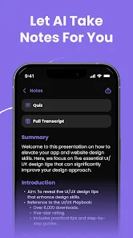
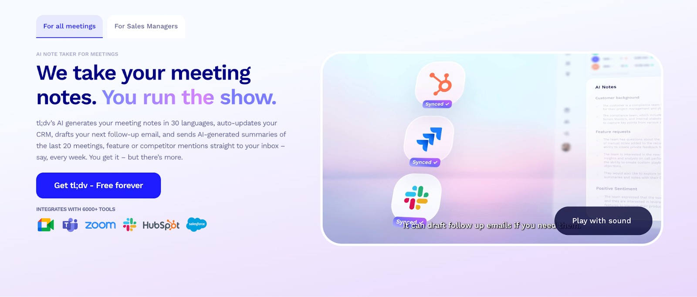

Smart Notes, Smarter You
In today’s fast-paced digital world, capturing and organizing information efficiently is more important than ever.
The AI Note-Taker App is designed to revolutionize the way users take, manage, and interact with their notes by integrating intelligent automat-
ion and real-time assistance.
The AI Note-Taker App is a smart productivity tool that goes beyond traditional note-taking. Instead of just storing
information, it understands, processes, and enhances your notes using artificial intelligence. Whether you're a student, developer, or professional, this app helps you stay organized, focused, and productive.
Users can create notes using text, voice input, or even images. The AI processes the input and converts it into structured, readable content automatically.
The app allows users to record lectures, meetings, or ideas on the go. It then converts speech into accurate text, saving time and effort.
Long notes are automatically summarized into short, clear points using AI. This helps users quickly revise and understand key concepts.

Instead of keyword-based search, the app uses context-aware AI to find relevant notes, even if the exact words don’t match.
Notes are automatically categorized and tagged based on content, making it easier to manage large amounts of information.
The app includes a built-in AI assistant that can: Answer questions from your notes Explain concepts Generate additional insights
📚 Students can record lectures and get summarized notes instantly
💼 Professionals can track meetings and action points
💻 Developers can store and search code snippets efficiently
🧠 Anyone can capture ideas and organize them intelligently
Frontend: React / HTML / CSS
Backend: Node.js / Express
AI Integration: APIs for NLP, speech recognition, and summarization
Database: MongoDB / Firebase
Unlike traditional note-taking apps, this project focuses on intelligence over storage. It doesn’t just save your notes — it actively helps you understand, recall, and utilize information better.
Real-time collaboration (like Google Docs)
Handwriting recognition
Offline AI capabilities
Cross-device synchronization
The AI Note-Taker App is more than just a tool — it’s a personal productivity assistant that transforms raw information into meaningful knowledge. By combining simplicity with powerful AI features, it helps users work smarter, not harder.